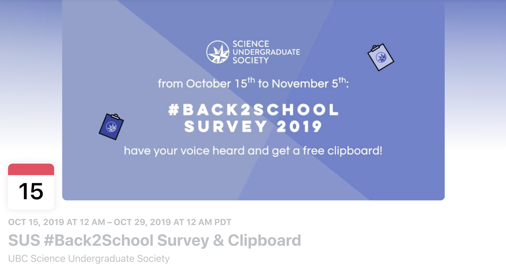
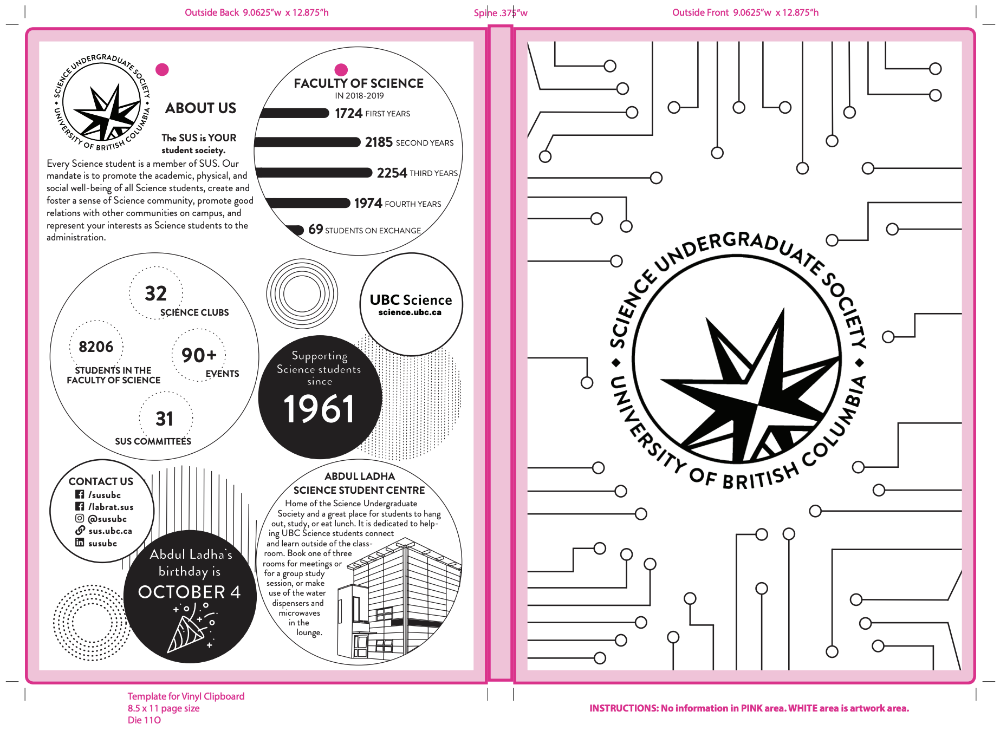
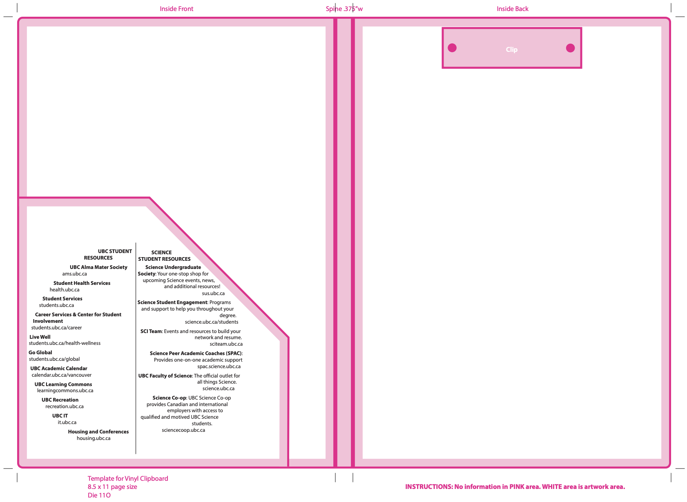
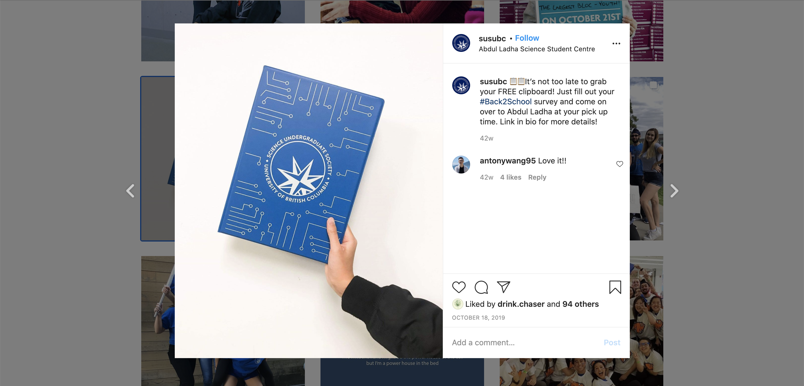

#Back2School Clipboard
Graphic Designer
July 2019 - August 2019
Adobe Illustrator, Adobe Photoshop
With each new school year, the Science Undergraduate Society invites UBC’s 8,206+ Science students to fill out the annual #Back2School Survey in exchange for a newly designed clipboard. As one of Graphic Designers for the Science Undergraduate Society this year, I was given the project task of designing a completely new and unique Science-themed clipboard incentive.
I was not given that many limitations as far as creative freedom, as long as I stayed on brand and made sure that the clipboard followed a Science theme and appropriately represented UBC’s faculty of Science. I wanted to design a clipboard that would portray a sense of the Science community and generate more awareness for the multiple resources offered to our students.
1. Brainstorming
Before drafting up anything, I created a moodboard to identify which direction and theme I wanted to follow. Because I was limited to a two dimensional design, I made sure to only include photos that followed this direction and then narrowed down aspects from each design that I wanted to include in the clipboard.
2. Sketching
After taking inspiration from the various photos, I began sketching out rough drafts by hand to determine what I wanted to digitalize. As I started sketching, I noticed a common factor in each design - circles. Once I noticed this, I decided to integrate this as the theme in my designs.
Sketching by hand allowed me to conceptualize what I would be transferring onto Adobe Illustrator and make sure that I had a strong foundation before creating the vectors and shapes on screen.
3. First Iteration
Once I played around with different sketches and rough drafts, I started to transfer these iterations onto Adobe Illustrator. At first, I struggled with trying to find out a cohesive way to place all the pieces of text. However, identifying a theme and creating a number of rough drafts definitely helped me as I continued designing.
After various feedback and several iterations, this was the final product!
 This was one of my first projects as a design lead. More so, my first project designing in one dimension. Without being able to use textures, vectors or patterns, I was challenged to think outside of the box and strictly was limited to shapes and lines. I also learnt the importance of having a grasp of concept before designing. Had I not identified a theme or communicated clearly with the SUS VP Communications and VP Academic, being able to come up with a clear design direction that stayed on brand would have definitely not been as easy!
SUS Clipboard distributed to UBC Science students.